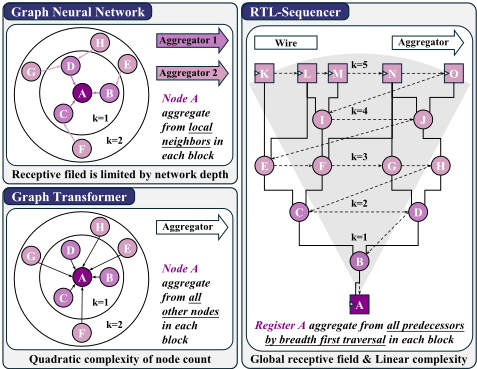
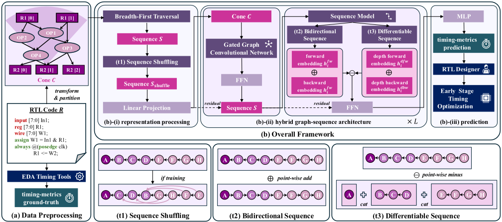
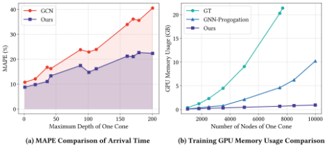
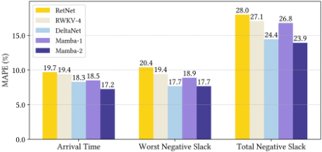

RTL-Sequencer：基于序列范式的可扩展 RTL 时序预测
论文解决 RTL 阶段时序预测难题：精确时序要到 post-layout 才可获得，而已有图基 ML 方法（GNN/Graph Transformer）感受野受限、复杂度二次增长且丢失信号方向性，难以处理综合前常超一万节点、深度超一百的 logic cone。方法上提出 RTL-Sequencer：用逆向 BFS（BFT）将 logic cone 线性化为节点序列，采用 Mamba-2 等线性序列模型，并叠加 sequence shuffling、双向建模、可微（全局减深度局部）建模与 GNN+序列混合架构四项定制技术。在 21 个开源设计（6K–510K 门、NanGate45nm）上，AT MAPE 达 17.24%（R=0.92、R²=0.85），TNS MAPE 23.92% 优于次优 CircuitFusion 的 29.45%，且内存复杂度随节点数与 cone 深度保持线性。对团队而言，这类 ML 辅助早期时序预估可缩短 LPDDR/HBM/UCIe 等 IP 从 RTL 到 STA 的长迭代回路。
精确时序分析依赖 post-layout 的物理信息（如线长），RTL 阶段缺乏及时时序反馈，拖慢时序驱动优化并延长设计迭代。已有 ML 时序预测多基于图模型：GNN 感受野受网络深度限制、加深会过平滑；GNN-Propagation/DAGNN 训练复杂度随 cone 深度二次增长且深层误差累积；Graph Transformer 节点数二次复杂度且弱化信号方向性。而综合前 logic cone 规模大（常超一万节点、最大深度超一百），长程时序依赖难以建模。
将 RTL 表示为 Boolean Operator Graph（BOG），对每个 endpoint register 提取 transitive fan-in logic cone，用从输出寄存器出发的逆向 Breadth-First Traversal（BFT）将 cone 线性化为节点序列，再用线性复杂度的现代序列模型（Mamba-2）做监督回归，标签来自 P&R 后 PrimeTime sign-off STA 的 AT/WNS/TNS。四项定制技术：(1) Sequence Shuffling——训练时在每层 BFT 深度内以 50% 概率随机置换节点作为数据增强，推理时按 in/out-degree 启发式排序；(2) Bidirectional Sequence Modeling——正反两条序列路径捕获双向信号传播；(3) Differentiable Sequence Modeling——以可学习 Sigmoid 门控系数 λ 对全局嵌入与深度局部嵌入做差，突出全局时序行为；(4) Hybrid Graph-Sequence Architecture——GatedGCN 捕获局部结构依赖、序列模型捕获长程深度依赖，所有图-序列转换均为可微操作，端到端训练。
AT 预测 MAPE 17.24%，R=0.92、R²=0.85，为所有对比方法中最低误差与最高相关性
TNS MAPE 23.92%，优于次优方法 CircuitFusion 的 29.45%
基线对比：TF-Predictor AT MAPE 35.71%、SG-Former 32.67%，RTLDistill 与 NUATimer 因 cone 层间误差累积被超越
可扩展性：GT 在 batch size 为 1 时显存随节点数二次增长，GNN-Propagation 计算复杂度随 cone 深度二次增长（每层递增 100 节点验证），RTL-Sequencer 保持线性内存复杂度
消融实验显示 sequence shuffling 带来最显著精度增益；四种序列架构中 Mamba-2 在所有时序指标上最优，且所有序列模型在精度与可扩展性上均超过 GNN/GT 变体
实验设置：21 个开源 RTL 设计、5 折交叉验证（按设计划分训练/评估集）、设计规模 6K–510K 门、NanGate45nm PDK，Design Compiler 综合、Innovus 物理实现、PrimeTime 提取标签
区别于既有 GNN、GNN-Propagation 与 Graph Transformer 路线，本文提出将 logic cone 线性化为节点序列的 sequence-based 新范式：以线性复杂度获得全局感受野、显式保留信号方向性、消除层间严格依赖。相比同样使用序列模型的 TF-Predictor（仅在较易处理的 layout 阶段对指定路径建模、节点数二次复杂度），本文在 RTL 阶段对完整 logic cone 建模，并通过 sequence shuffling、双向建模、可微微分建模与图-序列混合架构四项协同技术定制线性序列模型（Mamba-2），图与序列转换均可微、支持端到端优化。
相关度级别：high
命中能力域：2.2 RTL 设计与实现 | 2.3 时序与物理实现 | 2.7 EDA/验证自动化与 AI 辅助
理由：论文核心是 ML 辅助的 RTL 早期时序预测，直接命中 2.3 中明确列出的'ML 辅助时序/功耗预测'；其应用目标是在 RTL 阶段提供 AT/WNS/TNS 反馈以驱动早期时序优化，与 2.2 的'逻辑综合与时序收敛'工程场景衔接，可减少团队 LPDDR5X/HBM4/UCIe 等 IP 在 RTL→综合→P&R→STA 长回路中的迭代次数；作为 AI 辅助 EDA 方法学（非验证自动化），也与 2.7 的自动化能力沉淀相关。团队在高复杂度协议与高速接口 IP 上时序收敛压力大，综合前获得时序可见性具有直接工程价值。
建议动作：深入精读并做内部分享
arXiv:2607.15830v1 [cs.AR] 2026年7月17日
Ziyan Guo, Wenji Fang, Wenkai Li, Yuchao Wu, Shang Liu, Zhiyao Xie ∗ 香港科技大学（HKUST）
{zguoby, wfang838, wlidm, ywu092, sliudx}@connect.ust.hk, eezhiyao@ust.hk

分为四类：(i) 传统机器学习（ML）方法，如 Random Forest [2] 和 XGBoost [5]，主要对逻辑锥的统计特性进行建模，从而忽略了对其精确时序分析至关重要的拓扑结构。(ii) 图神经网络（GNN），包括图卷积网络（GCNs）[20] 和图注意力网络（GAT）[31]，存在感受野受限的问题，而感受野本质上受网络深度的约束 [13, 25]。这种限制阻碍了它们在具有较大逻辑深度的综合前逻辑锥上的应用。通过简单地堆叠额外的 GNN 层来缓解这一问题的尝试，往往会加剧过平滑问题 [26]，导致节点嵌入同质化、缺乏判别性表示。因此，当应用于大规模设计时，这些模型的泛化能力会显著下降。(iii) GNN-Propagation 或 DAGNN [29] 旨在通过在逻辑锥内逐层计算表示来提供全局感受野。然而，这种架构带来了严格的层间依赖，导致训练复杂度随逻辑锥深度呈二次方增长。这种复杂度不仅阻碍了训练的并行化，还加剧了较深层中的误差累积，从而限制了其在具有深层结构的设计上的可扩展性。(iv) 图 Transformer（GTs）[42] 能够提供全局感受野；然而，其复杂度随节点数量呈二次方增长，并且过度强调节点间关系而非信号方向性。此外，TF-Predictor [3] 引入 Transformer 作为序列模型，但它仅在相对易于处理的版图阶段表示指定的路径，并且会带来二次方的节点复杂度。
为了解决基于图的方法的固有局限性，我们提出了一种新颖的框架 RTL-Sequencer，它
寄存器传输级（RTL）的精确时序预测是设计自动化领域长期存在的挑战。现有的基于图的方法受限于有限的感受野、高复杂度以及信号方向性的缺失。我们提出 RTL-Sequencer，这是一种新颖的基于序列的范式，通过广度优先遍历将逻辑锥线性化并应用现代线性序列模型，从而实现可扩展的 RTL 时序预测。此外，通过四种协同技术对序列模型进行定制，包括序列混洗、双向建模、可微建模以及图-序列混合架构。大量实验表明，RTL-Sequencer 相较于最先进的基线方法取得了显著提升，推动了早期阶段的时序优化。
时序仍然是数字集成电路设计中的一项关键优化目标。传统设计方法的一个根本局限在于，由于缺乏诸如连线长度信息等精确的物理信息，精确的时序分析只有在布局后阶段才能获得 [16]。因此，这种滞后的反馈削弱了早期设计阶段（包括寄存器传输级（RTL）设计）中时序驱动优化的有效性，从而显著延长设计迭代周期并增加上市时间。
为了弥合这一差距，机器学习（ML）已成为一种有前景的面向早期阶段时序预测的数据驱动范式。如表 1 所示，先前的研究已广泛研究了跨各种设计阶段的基于 ML 的时序预测，包括布局、网表，以及由于其高抽象层次而最具挑战性的 RTL 阶段 [9, 11, 32]。在 RTL 阶段，硬件描述语言（HDL）代码通常被转换为一种称为布尔运算符图（BOG）的中间表示 [9, 32]，它是一种由布尔逻辑门构成的有向图。随后，基于 ML 的时序预测被应用于逻辑锥，逻辑锥被定义为 BOG 的子图，其中涵盖一个输出寄存器及其所有扇入输入寄存器和组合节点。
然而，我们观察到这些逻辑锥是在综合之前生成的，因而呈现出深且大规模的拓扑结构，通常包含超过一万个节点，最大深度超过一百。这种复杂性给基于 ML 的方法准确建模逻辑锥内部的长程时序依赖关系带来了巨大挑战。如表 1 所总结，这些方法可以大致分为
∗ 通讯作者
本作品根据知识共享署名 4.0 国际许可协议（Creative Commons Attribution 4.0 International License）进行许可。DAC '26，2026 年 7 月 26–29 日，美国加利福尼亚州长滩
© 2026 版权由所有者/作者持有。
ACM ISBN 979-8-4007-2254-7/2026/07
| Stage | Type | Works | Global Recept. | Linear Complex. |
|---|---|---|---|---|
| Layout | Traditional | [1, 15, 18, 19, 22] | - | - |
| Layout | GNN-Prop. | [6, 14, 17, 34, 43] | ✓ | × |
| Layout | GT | [4, 44] | ✓ | × |
| Netlist | Traditional | [39] | - | - |
| Netlist | GNN | [36, 37] | × | ✓ |
| RTL | Traditional | [9, 11, 27] | - | - |
| RTL | GNN | [23] | × | ✓ |
| GNN-Prop. | [32, 33] | ✓ | × | |
| GT | [8, 10, 38] | ✓ | × | |
| Sequencer | Ours | ✓ | ✓ |
| Stage | Type | Works | Global Recept. | Linear Complex. |
为具有挑战性的 RTL 时序预测建立了一种可扩展的基于序列的范式。我们的关键洞察在于定制线性序列模型 [7, 12, 24, 28, 40]，而非基于图的模型。如图 1 所示，这种范式转变相较于基于图的模型能够提供若干关键优势：(i) 面向长程时序依赖、且与网络深度无关的全局感受野；(ii) 相对于节点数量和锥深度的线性计算复杂度；(iii) 显式保留信号方向性，从而缓解过平滑；(iv) 消除严格的层内依赖。为实现这种基于序列的范式，从输出寄存器出发的逆向广度优先遍历（BFT）提供了一种将逻辑锥转换为序列的基本解决方案。
然而，直接采用确定性的广度优先遍历（BFT）和传统序列模型可能是次优的，主要原因在于当拓扑不变的逻辑锥被简化为固定、单向、广度优先的节点序列时，拓扑信息会丢失。为解决这些局限，我们提出四种协同技术，进一步将序列模型定制以适应这一具有挑战性的任务：(i) 序列混洗（Sequence Shuffling），使序列模型接触逻辑锥的多样化序列变体，而非确定性 BFT 所引入的固定节点顺序。具体而言，在训练过程中，每个 BFT 深度内的节点被随机置换作为数据增强，同时保持逻辑依赖关系与时序收敛，从而提升在异构 RTL 设计上的泛化能力。(ii) 双向序列建模（Bidirectional Sequence Modeling），通过后序节点对前序节点的表示感知，捕捉逻辑锥中信号传播的双向流动，从而支持更深的网络模块。(iii) 可微序列建模（Differentiable Sequence Modeling），确保节点表示与深度优先的关键时序路径对齐，而非广度优先的邻居。具体而言，我们引入一种差分（即全局减去深度局部）机制，通过另一个序列模型提取深度特定的嵌入，并将其从全局嵌入中减去，从而强调全局时序行为而非深度局部影响。(iv) 图-序列混合架构（Hybrid Graph-Sequence Architecture），分别利用基于图的范式在节点局部广度方面的优势和基于序列的范式在时序路径全局深度方面的优势。具体而言，我们提出一种将图神经网络（GNN）集成到序列建模流水线中的架构。在每个模块中，输入数据首先由 GNN 模块处理以捕捉局部结构依赖，随后通过序列建模编码长程信号传播。这种集成实现了跨不同结构 RTL 设计的端到端学习。
综上所述，我们的工作做出了以下关键贡献：
我们的问题形式化遵循先前的工作 [9, 32]。具体而言，以寄存器传输级（RTL）描述的数字电路被表示为有向图 𝐺 = ( 𝑉, 𝐸 ) ，其中 𝑉 表示与寄存器和组合逻辑元件相对应的节点的集合，𝐸 表示与寄存器和组合逻辑元件相对应的节点的集合。这种图抽象通常被称为布尔运算符图（Boolean Operator Graph, BOG）[9, 32]，它封装了 RTL 设计中固有的结构与功能依赖关系。
其主要目标是直接从 RTL 表示中预测每个端点寄存器节点 𝑛 ep ∈ 𝑉 ep 处的到达时间，记为 ATpred ( 𝑛 ep ) 。真值到达时间 ATlabel ( 𝑛 ep ) 由在布局布线（place-and-route）之后执行的签核静态时序分析（static timing analysis, STA）获得。因此，该预测任务被建模为一个监督回归问题，其目标是最小化所有寄存器节点上 ATpred ( 𝑛 ep ) 与 ATlabel ( 𝑛 ep ) 之间的偏差。形式化地，优化目标表示为：
其中，𝑉 ep ⊆ 𝑉 表示端点寄存器节点的子集，𝜃 表示预测模型的可学习参数。
在本节中，我们概述现代线性序列模型 [7, 12, 24, 28, 40] 的背景与动机。在一般的序列模型中，节点的表示基于其当前状态和累积的历史信息进行更新。值得注意的是，这一历史上下文由前序节点无损地编码，同时保持线性的计算复杂度。这种形式化方式与基于注意力的架构形成鲜明对比，后者的每个节点表示显式地依赖于序列中的所有其他节点，从而带来二次方复杂度。
具体而言，设节点的有序序列表示为 𝑆 = ( 𝑛 1 , 𝑛 2 , ..., 𝑛 𝑖 , ..., 𝑛 𝑁 ) 。在每个块（block）中，𝑥 𝑖 ∈ R 𝑘 是节点 𝑛 𝑖 的输入特征向量，𝑦 𝑖 ∈ R 𝑘 为相应的输出向量，ℎ 𝑖 - 1 ∈ R 𝑘 为编码从 𝑛 1 到 𝑛 𝑖 - 1 历史信息的隐藏状态。节点表示的更新公式由下式给出：
在此，Sequencer 在不受严格节点到节点限制的情况下捕获当前节点 𝑛 𝑖 与封装在 ℎ 𝑖 - 1 中的历史之间的依赖关系。随后，Projection 对更新后的隐藏状态 ℎ 𝑖 的逐通道特征进行精炼。所得的 𝑦 𝑖 被视为下一个块的后续输入，从而促进跨连续网络块的表示学习。

在本节中，我们介绍 RTL-Sequencer 的方法，并在图 2 中加以展示。为清晰起见并突出我们的贡献，我们首先在 4.1 节中概述该框架的基本解决方案，详细说明如何将 RTL 设计转换为节点序列，以及随后如何应用序列模型进行表示学习。在此基础上，我们引入四种协同技术，包括 4.2 节中的序列混洗（sequence shuffling）、4.3 节中的双向序列建模、4.4 节中的可微序列建模，以及 4.5 节中的图-序列混合架构，从而进一步将序列模型定制化地应用于 RTL 时序预测。
为了建立基于序列的范式，我们在本节中首先概述 RTL-Sequencer 的基本解决方案。这包括将 RTL 设计转换为有序的节点序列，并应用序列模型直接从这些序列预测时序行为。
首先，鉴于端点寄存器（endpoint register）的时序行为主要由其在 BOG 中关联的逻辑锥（logic cone）决定，我们采用基于逻辑锥的划分策略来分离出该逻辑锥，其定义为以端点寄存器为根的传递扇入子图。形式化地，对于每个端点寄存器 ep ∈ 𝐺 ，我们通过从 ep 到任意输入寄存器的反向遍历提取其逻辑锥 𝐶 ⊆ 𝐺 ，从而捕获所有对其信号到达时间有贡献的上游组合元件与时序元件。
随后，我们采用从端点出发的逆向广度优先遍历（Breadth-First Traversal, BFT），将逻辑锥 𝐶 转换为节点序列 𝑆 = BFT ( 𝐶 ) = ( 𝑛 1 , 𝑛 2 , ..., 𝑛 𝑖 , ..., 𝑛 𝑁 ) 。与深度优先遍历因其递归探索方式可能掩盖时序依赖关系不同，BFT 按层级顺序访问节点。这种排序方式保留了信号传播经过组合门时的层级推进过程，有助于更忠实地表示逻辑锥中的时序行为。
这样的节点序列 𝑆 被输入到所提出的序列模型（记作 Sequencer）中，以取代传统的基于图的方法。对于每个节点 𝑛 𝑖 ∈ 𝑆 ，序列模型会计算其前向隐藏状态嵌入 ℎ fw 𝑖 ，从而捕获来自序列中前序节点的历史依赖关系。形式化地，𝑛 𝑖 的前向序列嵌入 ℎ fw 𝑖 定义为：
其中，ℎ 𝑖 - 1 表示从先前节点传播而来的隐藏状态，𝑥 𝑖 表示与节点 𝑛 𝑖 相关联的输入特征向量。与公式 2 中的基本形式不同，最终表示 ℎ 𝑖 并非仅由 Sequencer ( 𝑆, ℎ 𝑖 - 1 , 𝑥 𝑖 ) 决定；而是在后续阶段中通过引入能够丰富表示能力的额外组件对其加以增强。
在本节中，我们介绍了 RTL-Sequencer 的一个基本解决方案作为基线。然而，直接应用确定性的 BFT 与传统序列模型被证明是次优的，因为当拓扑不变的逻辑锥被简化为固定的、单向的且广度优先的序列时，往往会丢失关键的拓扑信息。为克服这些局限，后续各节将介绍四种协同技术，旨在进一步将序列模型定制化地应用于具有挑战性的 RTL 时序预测。
| Feature | Type | Channel |
|---|---|---|
| cell type | one-hot | 12 |
| fan-out number | int | 1 |
| fan-in number | int | 1 |
| load capacitance | float | 1 |
| slew | float | 1 |
| node order in current BFT-level | int | 1 |
| number of nodes in current BFT-level | int | 1 |
| start flag of each BFT-level | one-hot | 1 |
| end flag of each BFT-level | one-hot | 1 |
| order of parent node in next BFT-level | int | 1 |
| Feature | Type | Channel |
为解决拓扑不变的逻辑锥被转换为固定节点序列时所造成的信息丢失，我们引入了一种随机打乱机制。具体而言，在每个 BFT 深度层级内，节点顺序以 50% 的概率被随机化，同时保持逻辑锥拓扑的不变性。通过在后续层级中同步各子节点之间的置换，层级间的一致性得以维持。这一过程可视为一种数据增强手段，在保留逻辑依赖关系与时序收敛的同时，使序列模型接触到多样化的节点顺序，最终提升模型在异构 RTL 设计上的泛化能力。
例如，考虑一个逻辑锥序列 𝑆 = ( 𝑥 1 , 𝑥 2 , 𝑥 3 , 𝑥 4 , 𝑥 5 ) ，其中 𝑥 1 连接到 { 𝑥 2 , 𝑥 3 } ，而 𝑥 2 与 𝑥 3 分别进一步连接到 { 𝑥 4 } 与 { 𝑥 5 } 。 𝑆 shuffle = ( 𝑥 1 , 𝑥 3 , 𝑥 2 , 𝑥 5 , 𝑥 4 ) 可以是一个可能的打乱变体，其中 𝑣 5 的位置相对于 𝑣 4 被提升，这反映了 𝑥 3 与 𝑥 5 之间的直接连接。
在推理阶段，需要确定一种与训练过程相一致的排序策略。为了充分利用序列模型固有的信息流，我们采用一种启发式的确定性排序方法，依据节点的入度和出度统计信息，对每个广度优先遍历（BFT）层级内的节点进行排序。连接度较高的节点在每个层级内被放置在更靠近输出寄存器的位置，从而丰富了可用于时序预测的上下文信息。该方法有效地将训练阶段随机数据增强的优势与推理阶段信息利用的最大化相结合，最终提升了模型在先前未见过的 RTL 设计上的预测精度。
在 4.1 节所述的基线模型中，采用单个序列模型来捕捉节点 𝑛 𝑖 的前向序列嵌入 ℎ fw 𝑖。然而，这种构造将信息传播约束为单向流动，从而阻止后续节点对先前表示产生影响，并限制了序列器块的深度。这种限制也与实际设计流程不相符，因为静态时序分析（STA）和逻辑综合本质上都并非在单向上下文中运行。
为了克服这一限制，我们提出一种双向序列建模方法，通过前向序列 𝑆 的反转对应序列来对其进行增强，该反转序列记为 𝑆 fl ip = ( 𝑛 𝑁 , ..., 𝑛 𝑖 , ..., 𝑛 2 , 𝑛 1 )。我们实例化一个反转序列模型来处理 𝑆 fl ip，从而促进反向信息流动。对于每个节点 𝑛 𝑖，反向隐藏状态 ℎ bw 𝑖
通过聚合反向序列器的输出计算得到：
这种双路径构造通过将每个节点同时嵌入其前驱节点与后继节点之中，显著增强了表示表达能力，从而使模型能够更有效地捕捉跨越深层逻辑的时序关键依赖关系。
与深度优先遍历相比，广度优先遍历（BFT）虽然避免了回溯，但它经常将不相关的节点置于同一 BFT 深度，从而使它们在所得的节点序列中彼此相邻。在序列模型中，这种相邻性导致每个节点的表示不可避免地受到其紧邻的同深度层邻居的影响。因此，序列模型往往过度强调局部的深度特定结构，而忽视沿关键时序路径的长程依赖关系。
为解决这一局限，我们提出一种可微机制，该机制能够自适应地削弱无关的深度特定上下文，同时突出全局时序行为。我们的设计受到可微序列建模领域最新进展的启发，这些方法在整个序列上采用嵌入相减操作 [41]。与这些方法不同，我们引入一种专门针对深度特定子序列而非完整序列进行操作的序列模型。通过从全局序列模型所得的嵌入中减去深度特定的节点嵌入，我们得到能够更忠实地保留全局时序依赖关系的深度无关嵌入。
例如，考虑序列 𝑆 = ( 𝑛 1 , 𝑛 2 , 𝑛 3 , 𝑛 4 , 𝑛 5 )，其中 𝑛 1 的子节点为 { 𝑛 2 , 𝑛 3 }，而 𝑛 2 和 𝑛 3 分别连接到 { 𝑛 4 } 和 { 𝑛 5 }。相应的 BFT 层级序列 𝐷 𝑖 定义为 𝐷 1 = ( 𝑁 1 )、𝐷 2 = 𝐷 3 = ( 𝑛 2 , 𝑛 3 )、𝐷 4 = 𝐷 5 = ( 𝑛 4 , 𝑛 5 )。对于每个节点 𝑛 𝑖，我们首先从正向序列和反向序列中计算深度特定嵌入 ℎ dfw 𝑖 和 ℎ dbw 𝑖，如下所示：
我们进一步引入一种自门控机制，以自适应地调节差分操作的强度。具体而言，我们引入可学习系数 𝜆 来量化深度特定上下文的影响。得益于 Sigmoid 激活函数，𝜆 被约束在区间 [ 0 , 1 ] 内。理想情况下，𝜆 ≈ 0 表示节点嵌入主要关注全局时序行为，而 𝜆 ≈ 1 则反映对深度局部结构信息的更强侧重，从而使表示能够通过学习实现自我调整。整体公式表示如下：
其中，ℎ fw 𝑖 和 ℎ bw 𝑖 分别表示由第 4.1 节和第 4.2 节得到的正向与反向全局嵌入。这种可微策略（即全局减去深度局部）确保节点表示与全局时序行为保持对齐，而不是自适应地对齐于深度特定结构。
尽管序列模型在捕捉长程与深层依赖方面十分有效，但它们可能无法定位设计逻辑中节点周围更广泛的结构信息。为了克服这一局限，我们提出了一种图-序列混合架构，将图神经网络（GNN）在局部上下文聚合方面的互补优势与序列模型捕捉全局及深层时序依赖的能力相结合。
| Model.Model | Type.Type | Arrival Time (AT).𝑅 | Arrival Time (AT).𝑅 2 | Arrival Time (AT).MAPE | Worst Negative Slack (WNS).𝑅 | Worst Negative Slack (WNS).𝑅 2 | Worst Negative Slack (WNS).MAPE | Total Negative Slack (TNS).𝑅 | Total Negative Slack (TNS).𝑅 2 | Total Negative Slack (TNS).MAPE |
|---|---|---|---|---|---|---|---|---|---|---|
| GCN [20] | GNN | 0.81 | 0.66 | 27.38% | 0.78 | 0.62 | 30.00% | 0.68 | 0.47 | 40.52% |
| GAT [31] | GNN | 0.83 | 0.69 | 25.23% | 0.81 | 0.65 | 27.46% | 0.69 | 0.48 | 39.11% |
| SG-Former [35] | GT | 0.73 | 0.54 | 32.67% | 0.7 | 0.51 | 34.71% | 0.66 | 0.43 | 46.80% |
| RTL-Timer [9] | XGBoost | 0.85 | 0.72 | 23.55% | 0.83 | 0.69 | 24.09% | 0.7 | 0.5 | 37.10% |
| RTLDistill [32] | GNN-Propagation | 0.89 | 0.81 | 21.86% | 0.87 | 0.74 | 23.11% | 0.74 | 0.56 | 32.15% |
| NUA-Timer [33] | GNN-Propagation | 0.9 | 0.81 | 21.16% | 0.88 | 0.77 | 22.62% | 0.76 | 0.59 | 29.45% |
| CircuitFusion [8] | GT | 0.91 | 0.83 | 20.29% | 0.89 | 0.8 | 21.67% | 0.82 | 0.69 | 26.16% |
| TF-Predictor [3] | Transformer | 0.7 | 0.5 | 35.74% | 0.67 | 0.45 | 37.98% | 0.63 | 0.4 | 49.31% |
| RTL-Sequencer | Sequencer | 0.92 | 0.85 | 17.24% | 0.91 | 0.83 | 17.66% | 0.88 | 0.77 | 23.92% |
| Model.Model | Type.Type | Arrival Time (AT).𝑅 | Arrival Time (AT).𝑅 2 | Arrival Time (AT).MAPE | Worst Negative Slack (WNS).𝑅 | Worst Negative Slack (WNS).𝑅 2 | Worst Negative Slack (WNS).MAPE | Total Negative Slack (TNS).𝑅 | Total Negative Slack (TNS).𝑅 2 | Total Negative Slack (TNS).MAPE |
| Model.Model | Arrival Time (AT).Δ 𝑅 | Arrival Time (AT).Δ 𝑅 2 | Arrival Time (AT).Δ MAPE | Worst Negative Slack (WNS).Δ 𝑅 | Worst Negative Slack (WNS).Δ 𝑅 2 | Worst Negative Slack (WNS).Δ MAPE | Total Negative Slack (TNS).Δ 𝑅 | Total Negative Slack (TNS).Δ 𝑅 2 | Total Negative Slack (TNS).Δ MAPE |
|---|---|---|---|---|---|---|---|---|---|
| RTL-Sequencer | 0.92 | 0.85 | 17.24% | 0.91 | 0.83 | 17.66% | 0.88 | 0.76 | 23.92% |
| Basic Solution | -0.12 | -0.22 | +12.23% | -0.13 | -0.21 | +12.92% | -0.19 | -0.26 | +16.39% |
| w/o Stochastic Shuffling | -0.09 | -0.14 | +8.23% | -0.11 | -0.18 | +9.26% | -0.16 | -0.22 | +11.69% |
| w/o Bidirectional Sequence Modeling | -0.04 | -0.09 | +5.01% | -0.04 | -0.05 | +5.73% | -0.11 | -0.15 | +7.20% |
| w/o Differentiable Sequence Modeling | -0.01 | -0.02 | +2.37% | -0.02 | -0.04 | +2.78% | -0.06 | -0.08 | +3.46% |
| w/o Hybrid Architecture | -0.02 | -0.02 | +3.22% | -0.03 | -0.05 | +3.93% | -0.08 | -0.11 | +5.18% |
| Model.Model | Arrival Time (AT).Δ 𝑅 | Arrival Time (AT).Δ 𝑅 2 | Arrival Time (AT).Δ MAPE | Worst Negative Slack (WNS).Δ 𝑅 | Worst Negative Slack (WNS).Δ 𝑅 2 | Worst Negative Slack (WNS).Δ MAPE | Total Negative Slack (TNS).Δ 𝑅 | Total Negative Slack (TNS).Δ 𝑅 2 | Total Negative Slack (TNS).Δ MAPE |
如图 2-(b) 所示，所提出的流水线首先将 BFT 与序列打乱相结合并应用于逻辑锥，从而生成初始序列表示。随后，该序列特征通道通过线性变换被投影到更高维的空间中。在此表示处理之后，采用一个 GNN 来捕捉逻辑锥中每个节点周围更广泛的局部结构依赖。随后，该逻辑锥被转换回有序序列，并由我们的序列模型进行处理，这些模型通过双向与差分序列建模得到增强，以捕捉长程与深层时序依赖。为进一步丰富通道级特征表示，遵循基于 Transformer 的架构的设计原则 [30]，在 GNN 与序列模型之后均附加了前馈网络（FFN）。至关重要的是，所有图到序列与序列到图的转换均以可微操作的方式实现，从而能够通过梯度下降实现无缝的端到端优化。
数据集。我们遵循 RTL-Timer [9]，在 21 个开源 RTL 设计上开展实验，并采用 5 折交叉验证。为确保泛化能力，训练集与评估集严格按设计进行划分。该数据集涵盖多种主流硬件描述语言，设计规模从 6K 门到 510K 门不等。在数据集生成方面，我们使用 Synopsys Design Compiler 进行逻辑综合，并使用 Cadence Innovus 进行物理实现，二者均基于 NanGate45nm 工艺设计套件。静态时序分析使用 Synopsys PrimeTime 执行，以提取作为真值的时序指标。
评估指标。我们在三个关键时序指标上评估模型性能：到达时间（AT）、最差负时序裕量（WNS）和总负时序裕量（TNS）。我们采用以下统计度量：皮尔逊相关系数（𝑅）：量化预测时序值与实际时序值之间的线性相关性。决定系数（𝑅 2）：衡量模型所解释的真值方差的比例。平均绝对百分比误差（MAPE）：刻画相对预测误差，数值越低表示精度越高。
实现细节。我们在混合图-序列架构中采用 GatedGCN [21] 与 Mamba-2 [7]。所有模型均在由 8 × NVIDIA RTX 4090D 组成的集群上，使用 PyTorch Lightning、PyTorch Geometric 和 Scikit-learn 进行训练。我们采用 Adam 优化器，初始学习率为 1 × 10 - 3，每个 GPU 的批大小为 8。在模型超参数方面，隐藏状态的通道数为 32，序列器模块（sequencer blocks）的数量 𝐿 为 3，应用于每个训练样本的打乱概率为 50%。
基线。我们将本框架与三种具有代表性的基于图的方法进行基准对比，包括 GCN [20]、GAT [31] 和 SG-Former [35]；同时与社区中广泛采用的若干最先进（SOTA）方法进行对比，包括 RTL-Timer [9]、RTLDistill [32]、NUATimer [33]、CircuitFusion [8] 和 TF-Predictor [3]。为保证一致性与公平性，所有基线均在我们的设置下重新实现，并有意排除源自综合后阶段的辅助特征（例如布局信息）。这一设计选择凸显了架构创新对 RTL 时序预测的贡献。
如表 3 所示，RTL-Sequencer 在所有评估的时序指标上均持续超越先前方法，从而凸显了其架构创新的有效性。具体而言，该框架实现了最低的 AT MAPE，为 17.24%，同时取得了最高的相关性分数，𝑅 = 0.92，𝑅² = 0.85。此外，RTL-Sequencer 在 TNS 上表现出显著优势，MAPE 达到 23.92%，而次优方法 CircuitFusion [8] 的结果为 29.45%。这一性能差距可归因于 CircuitFusion 的注意力机制中缺乏对信号传播的显式表示，其仅建模节点与节点之间的关系。尽管 CircuitFusion 与 SG-Former [35] 均采用基于 GT 的架构，但 SG-Former 由于依赖将 GT 与 GNN 相结合的单一模块，其 AT MAPE 相对较差，为 32.67%。RTLDistill [32] 与 NUA-Timer [33] 则受到锥层间误差指数级累积的阻碍，因此性能不及 RTL-Sequencer。值得注意的是，TF-Predictor [3] 在所有基线中表现最弱，AT MAPE 为 35.71%。尽管 TF-Predictor 自称是基于序列的模型，但它依赖于一种朴素的 Transformer 架构，仅专注于指定的时序路径。这一设计限制了其在 RTL 阶段的适用性，最终使其无法对逻辑锥建模出有意义的表示。


此外，图 3 展示了先前基于图的方法所固有的两个根本性局限。如图 3(a) 所示，随着逻辑深度增加，GCN 的性能相比 RTL-Sequencer 下降更为明显，凸显了其有效捕获深层组合结构的能力受限。在图 3(b) 中，当批大小设为 1 时，GT 呈现出随节点数呈二次方增长的内存开销，使其在大规模设计上不切实际。此外，通过在锥内逐层递增地添加 100 个节点，我们证明了 GNN-Propagation 的计算复杂度随锥深度呈二次方增长。相比之下，RTL-Sequencer 保持线性内存复杂度，从而能够在深层且复杂的设计上实现可扩展的训练。
为了评估所提出的架构创新各自的贡献，我们进行了一项全面的消融实验，其结果汇总于表 4 中。基线方案能够达到与基于图的方法相当的精度，从而凸显了基于序列的范式的前景。此外，每个组件都为预测性能带来了可衡量的提升，凸显了整体框架的协同特性。其中，序列打乱机制带来了最为显著的精度提升。这一提升源于其作为结构化数据增强策略的作用：通过在 BFT 层级内引入随机排列，模型在保持逻辑依赖关系的同时接触到更广泛的拓扑变化。这种多样性能够缓解对确定性节点排序的过拟合，从而增强在异构 RTL 设计上的泛化能力。
为了严格评估所提出的用于 RTL 时序预测的序列建模范式的有效性，我们在四种具有代表性的序列架构上开展了一项全面的对比研究。如图 4 所示，Mamba-2 模型在所有时序指标上始终表现出优越的性能，优于其他基于序列的方法。值得注意的是，所有序列模型在预测精度和可扩展性方面都大幅超越传统的基于图的解决方案，包括 GNN 和 GT 变体。这种一致的优势凸显了从各向同性图表示到有向序列建模的根本性范式转变，从而证实了逻辑锥线性化能够实现更具表达力且更可扩展的时序预测这一核心假设。总体而言，这些发现凸显了序列驱动框架作为基于图的方法的稳健且可扩展的替代方案在早期设计自动化中的前景。
本文提出 RTL-Sequencer，一种面向可扩展 RTL 时序预测的新型基于序列的范式。通过将逻辑锥转换为有序节点序列并采用先进的序列建模技术，该框架在显式保留信号方向性的同时，以线性计算复杂度实现了全局感受野。序列打乱、双向序列建模、可微序列建模与图-序列混合架构的集成共同提升了预测精度与可扩展性，并持续优于最先进（SOTA）的基于图方法。全面的实验与消融研究证实了整体范式及其各个组件的有效性。综上所述，这些结果表明 RTL-Sequencer 具有显著推进数字设计自动化中早期时序估计的潜力。
本工作得到香港研究资助局（RGC）CRF-YCRG C6003-24Y、GRF 16200724 以及 T46-415/25-R 项目的资助。部分工作由 ACCESS - AI Chip Center for Emerging Smart Systems（ACCESS——新兴智能系统人工智能芯片中心）开展，该中心受香港特别行政区政府创新科技署 InnoHK 计划的支持。
1 条证据未在原文中核对到